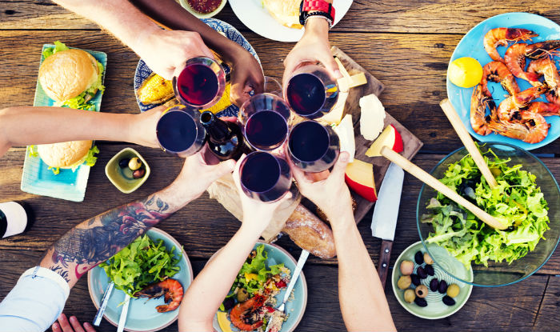
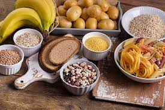

Importance of Eating good

July 23, 2023 | 30 comments
It protects you against many chronic noncommunicable diseases, such as heart disease, diabetes and cancer.
Eating a variety of foods and consuming less salt, sugars and saturated and industrially-produced trans-fats, are essential for healthy diet.
Eating your way to better health
Many people believe eating healthily is about dieting or eating less.
In fact, it’s simply a case of eating more of what your body needs and less of what it doesn’t – what we call a balanced diet.
That doesn’t have to mean boring or tasteless food though – and you can still snack on healthier alternatives, such as fruit, raw vegetables, rice cakes and fat-free yogurts.
July 19, 2023 | 48 comments
Eating a balanced diet
Eating a healthy, balanced diet is an important part of maintaining good health, and can help you feel your best.
This means eating a wide variety of foods in the right proportions, and consuming the right amount of food and drink to achieve and maintain a healthy body weight.
This page covers healthy eating advice for the general population.
People with special dietary needs or a medical condition should ask their doctor or a registered dietitian for advice.

July 12, 2023 | 56 comments
Essential factors for a balannced diet
By having an idea of the balance in your diet, it should be easier to enjoy food and be healthy.
There are seven essential factors for a balanced diet: carbs, protein, fat, fibre, vitamins, minerals and water.

July 3, 2023 | 103 comment